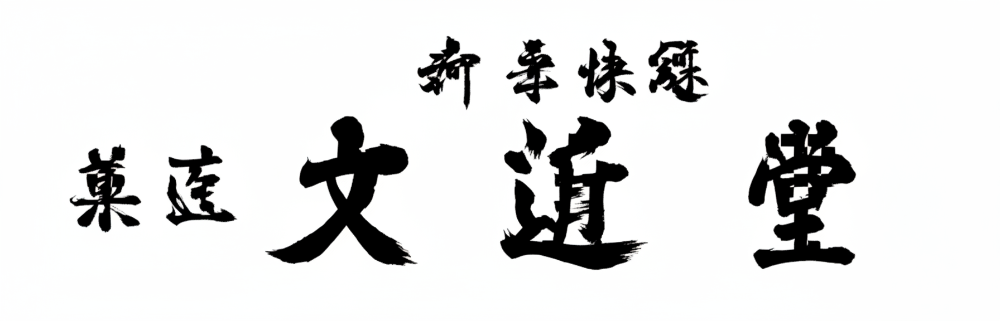
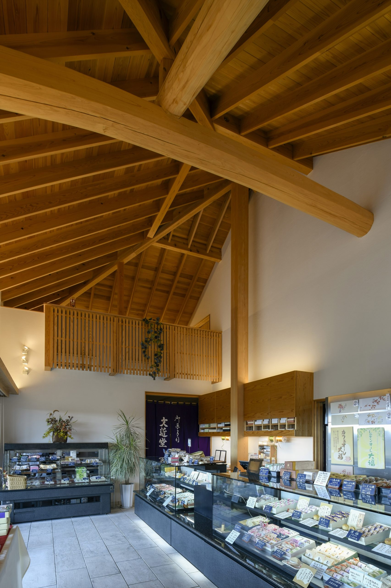
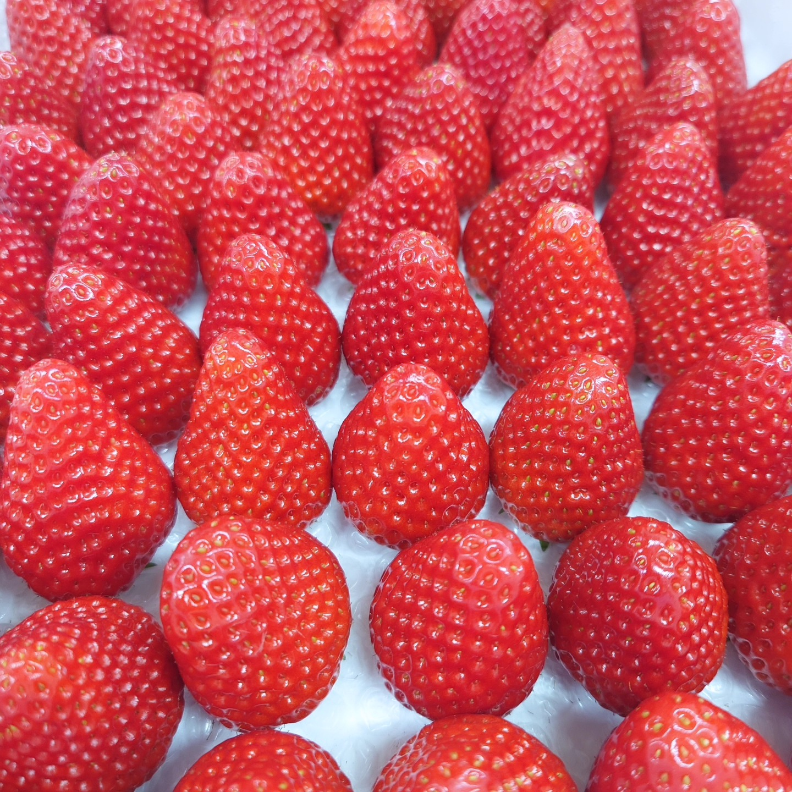
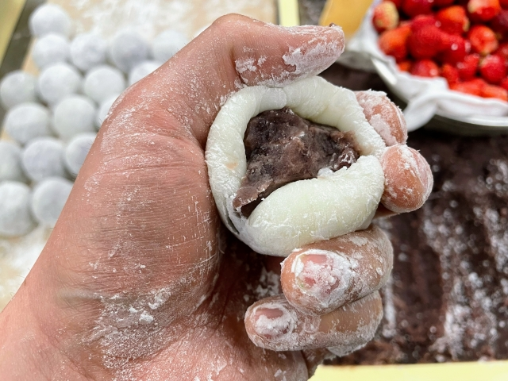
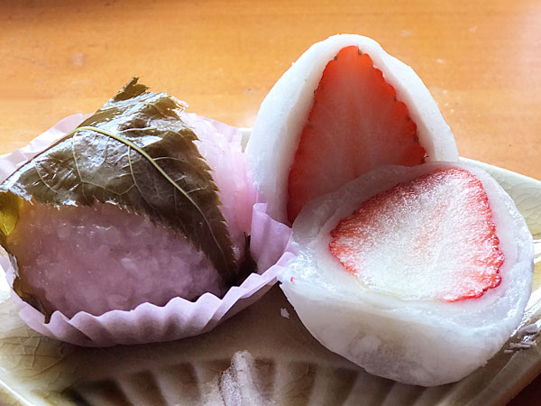
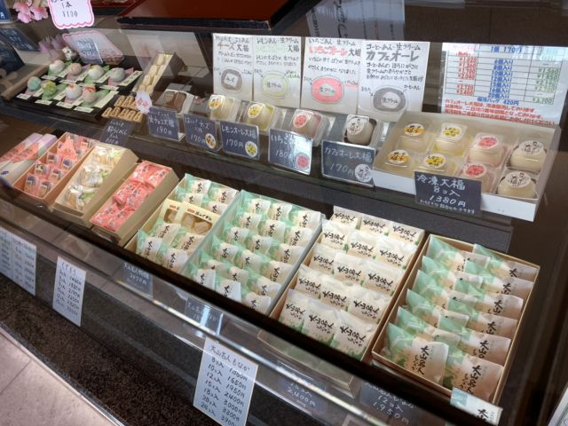
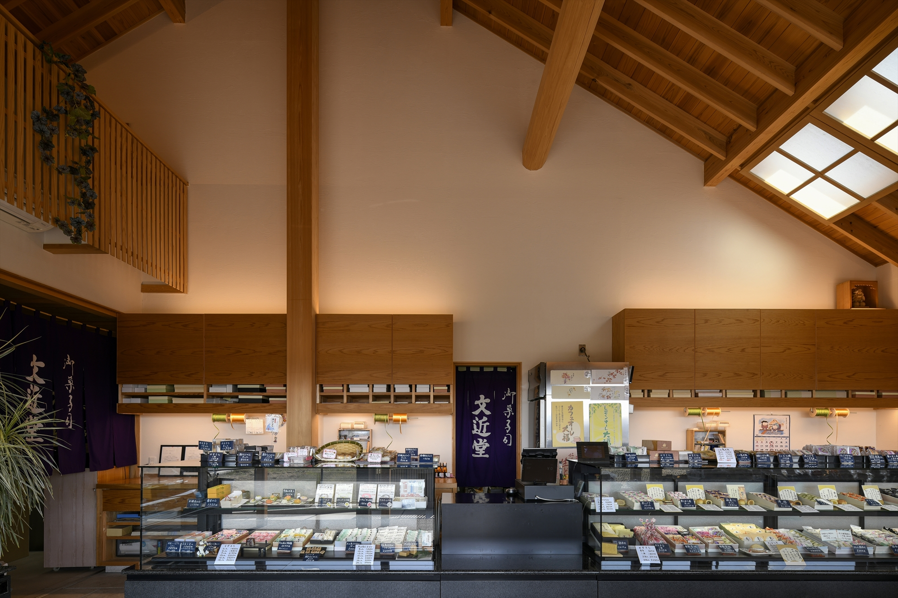
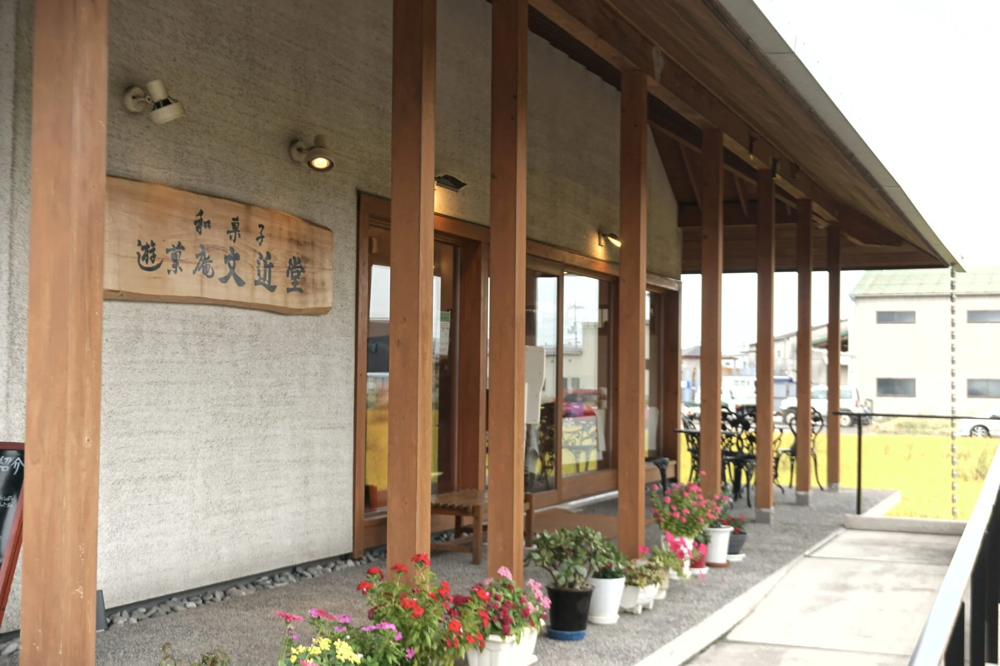

大山名人もなか
厳選された北海道産の大粒「大納言小豆」を、純度の高い氷砂糖と白双糖でじっくりと蜜付け。豆の形を崩さぬよう、一級技能士が五感を研ぎ澄ませて炊き上げた餡は、一粒一粒が美しく際立ち、雑味のない上品な甘みが広がります。
将棋の駒を象った特製の最中種に込めたのは、倉敷が生んだ至宝・大山康晴十五世名人の「歩を成金にするには一歩一歩の努力が必要だ」という信念。倉敷が誇る偉人の功績と、職人の揺るぎない矜持を、香ばしい最中の響きと共にお愉しみください。

変わらぬ手仕事で、日々のひとときを。
地元で愛され続ける、やさしい甘さの和菓子をお届けします。
厳選された北海道産の大粒「大納言小豆」を、純度の高い氷砂糖と白双糖でじっくりと蜜付け。豆の形を崩さぬよう、一級技能士が五感を研ぎ澄ませて炊き上げた餡は、一粒一粒が美しく際立ち、雑味のない上品な甘みが広がります。
将棋の駒を象った特製の最中種に込めたのは、倉敷が生んだ至宝・大山康晴十五世名人の「歩を成金にするには一歩一歩の努力が必要だ」という信念。倉敷が誇る偉人の功績と、職人の揺るぎない矜持を、香ばしい最中の響きと共にお愉しみください。
熟練の職人が直火で一から丁寧に炊き上げる、香り高い「ほろ苦いコーヒーあん」。それを優しく包み込むのは、口どけ滑らかな「生クリーム」と、驚くほど柔らかな「求肥（ぎゅうひ）」です。口に含んだ瞬間、コーヒーの芳醇な香りと苦みをクリームがマイルドに解き放つ、計算し尽くされた至福のバランス。
いちご・レモン・チーズなど、一級技能士の豊かな感性が光る「進化系大福」の数々。彩り豊かな驚きと至福のひと時を、どうぞ心ゆくまでご堪能ください。
岡山の方言で「おおらかな」を意味する「のふうぞ」。その名の通り、食べる人の心をふんわりと解き放つような、優しくも奥行きのある味わいに仕立てました。産地を厳選し丁寧に炊き上げた「かぼちゃ餡」に、芳醇な香りの「ラムレーズン」を贅沢に忍ばせて。かぼちゃ本来の素朴な甘みを、ラム酒の芳しい余韻が華やかに引き立てる和洋折衷の逸品です。歌のタイトルにもなった郷土の言葉を冠したこの菓子が、皆様に末永く愛される一品となりますように、真心を込めてお届けいたします。

私は代々農業を営む家系に生まれました。これからの時代は違う形で新たに商売を始め、後世に伝えていきたいと一念発起し、30歳での独立を目標に、高校卒業後、最初に就いた菓子屋の仕事を極めようと決心しました。京都や東京、静岡で修業を重ね、1981年（昭和56年）、29歳の時に創業しました。地元倉敷市ではなく、あえて知人のいない岡山市での創業でした。
当時は自分だけの力で一旗あげたいと思っていましたが、それは間違いでした。約7年後に倉敷へ店を移し、人とのつながりや地元のありがたみをあらためて痛感しました。今は恩返しのような気持ちで倉敷にちなんだ商品を作り、和菓子を通して街の魅力をひとりでも多くの方に伝えたいと思っています。
お菓子はパンやご飯のように空腹を満たす主食ではありません。ですが、悲しみに暮れ食欲がない時に音楽が癒しや励ましとなり心に栄養を与えてくれるように、お菓子もまたお客様の人生に寄り添い、気持ちを盛り上げたり元気づけたりする“応援菓”のような存在であってほしいと願っています。倉敷の街を漫遊するように、多様なお菓子を郷土色豊かな形や名前とともに、楽しみながらお召し上がりください。
代表取締役 大崎 貫達（おおさき かんたつ)





場所：岡山県倉敷市高須賀155-6
電車: JR瀬戸大橋線「久々原駅」から徒歩約14分（615m）
車: 2号線バイパス「西田」交差点を左折し、茶屋町方面へ約1.8km
JR瀬戸大橋線「茶屋町駅」から車で約5分 (2.5km)
※ 駐車場：6～10台
